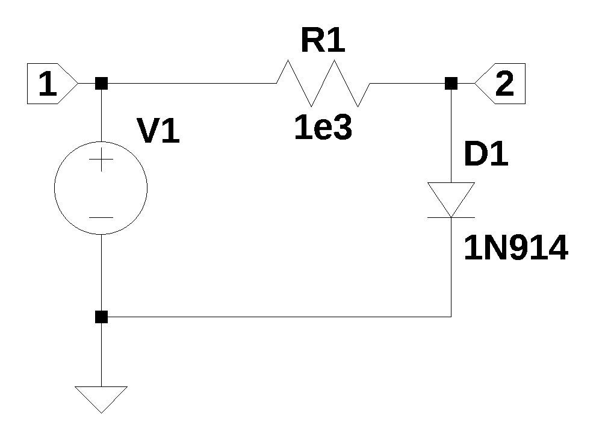
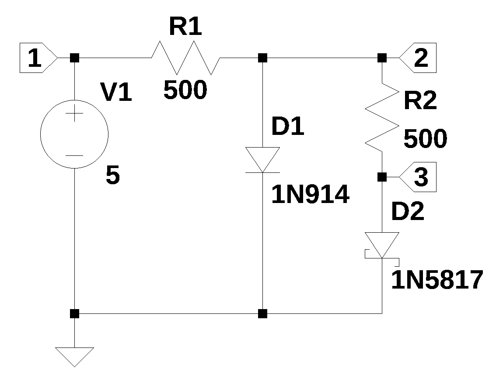

from sympy import *
import numpy as np
from scipy import signal
import matplotlib.pyplot as plt
import matplotlib.ticker
import pandas as pd
import SymMNA
from IPython.display import display, Markdown, Math, Latex
from tabulate import tabulate
init_printing()29 Diode Circuit
This chapter explores two circuits where diodes are used. A diode is a two-terminal electronic component that acts like a one-way valve for electric current. It allows current to flow easily in one direction, called the “forward direction” or “forward bias” and severely restricts or blocks current from flowing in the opposite direction, called the “reverse direction” or “reverse bias”. The voltage to current relationship is non-linear and often expressed by what is called the Ideal Equation of Diode, shown below.
\[i = I_s \left( e^{\frac{qV}{nkT}} - 1 \right) \tag{29.1}\]
Where:
\(i\) = Current flowing through the diode
\(I_s\) = Reverse or dark saturation current, a typical value for silicon is \(10^{-12}\) Amperes
\(e\) = Base of the neutral logarithm, 2.71828
\(q\) = Charge on the electron, \(1.602 \cdot 10^{-19}\) in coulombs
\(V\) = Applied voltage across the diode
\(n\) = Ideality factor, typically between 1 and 2 for silicon diodes
\(k\) = Boltzmann’s constant, \(1.380 \times 10^{-23}\) jouals/Kelvin
\(T\) = Absolute Temperature in Kelvin, at room temperature is 300 Kelvin
Diodes have two terminals, one is the Anode, through which current flows into the diode when the diode is forward biased or conducting in the forward direction. The other terminal is the Cathode, through which current flows out of the diode. In schematic diagrams, the diode symbol is a triangle pointing towards a line. The triangle represents the anode, and the line represents the cathode. The arrow points in the direction of “conventional current flow” (from positive to negative). By convention, current is defined as the direction in which positive charges would flow. This is opposite to the actual flow of electrons, which are negatively charged.
29.0.1 History of the Diode
The history of the diode goes back to the 19th and early 20th centuries, rooted in the discovery of one-way electrical conduction, or rectification. In 1874, German physicist Ferdinand Braun discovered the rectification effect in metal-sulfide crystals, an early form of the semiconductor diode. Separately, English physicist Frederick Guthrie observed the thermionic emission effect in 1873, where current flows one way from a heated metal to a cooler electrode in a vacuum; this was independently rediscovered by Thomas Edison in 1880. Building on this, John Ambrose Fleming patented the first practical vacuum tube diode, known as the Fleming valve, in 1904, which was widely used in early radio. Concurrently, crystal-based “cat’s whisker” diodes gained use in radio receivers, and the term “diode” itself was coined by William Henry Eccles in 1919. The true revolution came with the development of the modern P-N junction semiconductor diode, which became practical after advancements in materials and techniques in the mid-20th century, leading to smaller, more efficient, and reliable devices that eventually replaced most vacuum tube diodes.
The history of thermionic emission, the discharge of electrons from a heated surface, begins with early observations in the 19th century. The phenomenon was reported as early as 1853 by Edmond Becquerel and revisited in 1873 by Frederick Guthrie, who noted that a red-hot, negatively charged iron sphere would lose its charge. A more formalized discovery came in 1883, when Thomas Edison observed the one-way flow of current between a heated filament and a separate metal plate in his incandescent lamp, an effect he patented but didn’t immediately find a use for, and which became known as the “Edison effect.” However, the physical mechanism was not fully understood until after J.J. Thomson’s discovery of the electron in 1897. The effect’s practical application began in 1904 when John Ambrose Fleming used it to invent the first vacuum tube, or diode (Fleming valve), enabling the rectification of alternating current for radio. Later, Owen Willans Richardson provided the theoretical and mathematical framework, for which he was awarded the Nobel Prize in Physics in 1928, solidifying the scientific understanding of the effect now widely termed thermionic emission.
The Fleming valve, also known as the thermionic valve or diode, was a pivotal invention in the history of electronics, conceived by Sir John Ambrose Fleming. Building upon the earlier work of Thomas Edison concerning the “Edison effect” (the flow of current from a heated filament to a separate metal plate in a vacuum), Fleming developed the device in 1904 while seeking a more sensitive detector for radio waves for the Marconi Company. His breakthrough involved placing both a heated filament (cathode) and a separate metal plate (anode) inside an evacuated glass bulb. This two-element vacuum tube acted as a rectifier, allowing electric current to flow in only one direction, which was crucial for converting alternating current (AC) radio signals into detectable direct current (DC). This simple but revolutionary device marked the birth of vacuum tube technology, enabling significant advances in wireless telegraphy and setting the stage for the later invention of the triode and the subsequent development of radio, telephony, and computing.
29.0.2 Shockley ideal diode equation
The Shockley ideal diode equation, or diode law, is a fundamental formula in semiconductor physics that describes the exponential relationship between the current (\(I\)) and voltage (\(V\)) in a p-n junction diode. It is named after Nobel laureate William Shockley, one of the co-inventors of the transistor, who first derived an equation for the voltage across a p-n junction in a comprehensive article published in 1949. The subsequent development of the equation, which relates current as a function of voltage under specific assumptions, became known as the ideal diode equation. Researchers found that for many silicon junctions, the original equation was insufficient, leading to the introduction of the ideality factor (or emission coefficient, typically denoted as \(n\)), which accounts for non-ideal effects like carrier recombination within the junction, resulting in Equation 29.1.
29.0.3 Applications of Diodes
The common usage of diodes are listed below:
- Rectification: This is one of the most common uses. Diodes convert alternating current (AC), which periodically reverses direction, into pulsating direct current (DC), which flows in only one direction. This is fundamental for power supplies in almost all electronic devices.
- Voltage Regulation: Zener diodes are specifically designed to operate in reverse breakdown and maintain a stable voltage across their terminals, making them useful for voltage regulation and overvoltage protection.
- Signal Demodulation: In radio receivers, diodes are used to extract audio signals from modulated radio waves.
- Logic Gates: Diodes can be used in simple logic circuits.
- Light Emission: Light-Emitting Diodes (LEDs) are a type of diode that produces light when current flows through them in the forward direction.
- Light Detection: Photodiodes produce an electrical current when they absorb light, used in sensors and solar cells.
- Protection: Diodes can protect circuits from reverse polarity or voltage spikes.
The following Python modules are used:
The scipy.optimize.fsolve function is a core tool in the SciPy library for root finding of non-linear equations. It numerically finds the input values (roots) where a given function or system of non-linear equations equals zero.
from scipy.optimize import fsolve29.1 The Ideal Diode Equation
The ideal diode equation is plotted below.
# Constants for the Diode Equation
I_s = 1e-12 # Saturation current (Is) in Amperes. This value can vary widely.
n = 1.2 # Ideality factor (n). Typically between 1 and 2 for silicon diodes.
k = 1.380649e-23 # Boltzmann's constant in J/K
q = 1.602176634e-19 # Electron charge in Coulombs
T = 300 # Temperature in Kelvin (room temperature is approximately 300K)The ideal diode equation i splotted below with a range of values for the diode voltage ranging from -0.2 volts to 1.0 volts.
# Create a range of diode voltage values to plot
V_D_values = np.linspace(-0.2, 1, 500)
# Calculate the corresponding current (I) values for each voltage
I_values = I_s * (np.exp(V_D_values*q/(n*k*T)) - 1)
# Create the plot
plt.figure(figsize=(10, 6))
plt.plot(V_D_values, I_values, color='blue')
# Add labels and a title
plt.title('Ideal Diode I-V Characteristic Curve', fontsize=12)
plt.xlabel('Diode Voltage ($V_D$) in Volts', fontsize=12)
plt.ylabel('Diode Current ($I$) in Amperes', fontsize=12)
# Add a grid for better readability
plt.grid(True, linestyle='--', alpha=0.7)
# Add a legend
#plt.legend()
# Show the plot
plt.show()
29.2 Forward Biased Diode Circuit
The schematic shown in Figure 29.1 has a 1N914 diode with resistor \(R_1\) acting as a current limiter. The 1N914A datasheet from ON Semiconductor provides the device specifications. The 1N914 model parameters used in LTspice are:
.model 1N914 D(Is=2.52n Rs=.568 N=1.752 Cjo=4p M=.4 tt=20n Iave=200m Vpk=75 mfg=OnSemi type=silicon).

\(D_1\) in Figure 29.1 can be replaced with a current source as shown in the netlist below.
Diode_as_current_source_net_list = '''
* Diode_as_current_source.asc
R1 2 1 1e3
V1 1 0 5
I1 2 0 1
'''The MNA equations are generated from the function SymMNA.smna.
report, network_df, i_unk_df, A, X, Z = SymMNA.smna(Diode_as_current_source_net_list)The code below assembles the network equations from the MNA matrices and displays the equations.
# Put matrices into SymPy
X = Matrix(X)
Z = Matrix(Z)
NE_sym = Eq(A*X,Z)
# display the equations
temp = ''
for i in range(shape(NE_sym.lhs)[0]):
temp += '${:s} = {:s}$<br>'.format(latex(NE_sym.rhs[i]),latex(NE_sym.lhs[i]))
Markdown(temp)\(0 = I_{V1} + \frac{v_{1}}{R_{1}} - \frac{v_{2}}{R_{1}}\)
\(- I_{1} = - \frac{v_{1}}{R_{1}} + \frac{v_{2}}{R_{1}}\)
\(V_{1} = v_{1}\)
The free symbols are entered as SymPy variables and the element values are put into a dictionary.
var(str(NE_sym.free_symbols).replace('{','').replace('}',''))
element_values = SymMNA.get_part_values(network_df)The network equations for the netlist can be solved symbolically and the node voltages and dependent currents are diesplayed using symbolic notation.
U_sym = solve(NE_sym,X)
temp = ''
for i in U_sym.keys():
temp += '${:s} = {:s}$<br>'.format(latex(i),latex(U_sym[i]))
Markdown(temp)\(v_{1} = V_{1}\)
\(v_{2} = - I_{1} R_{1} + V_{1}\)
\(I_{V1} = - I_{1}\)
I1 is the current of the 1N914 and the following expression for the diode current can be developed from the equation:
\(I_{1N914} = I_S \left( e^{\frac{qv2}{nkT}} - 1 \right)\)
The expression for the current in \(D_1\) in terms of \(v_2\) is shown below.
I_s, n = symbols('I_s n')
I_1n914 = (I_s*(exp(v2*q/(n*k*T))-1)).subs({I_s:2.52e-9, n:1.752})
I_1n914\(\displaystyle 2.52 \cdot 10^{-9} e^{22.0786113423708 v_{2}} - 2.52 \cdot 10^{-9}\)
In the expression for \(v_2\), the diode equation is substituted for \(I_1\) along with other component values and saved as eq1.
eq1 = U_sym[v2].subs({I1:I_1n914, V1:5, R1:1e3})
eq1\(\displaystyle 5.00000252 - 2.52 \cdot 10^{-6} e^{22.0786113423708 v_{2}}\)
We want to find the value of \(v_2\) for which eq1 equals \(v_2\) and we can create a function that expresses this relation.
lam_f = lambdify(v2, eq1-v2)Using the fsolve function, an initial guess of 0.55 and asking for a solution with a tolerance of \(10^{-6}\), we can get the diode voltage which is calculated and printed below.
print(f'The diode voltage is: {fsolve(lam_f, 0.55, xtol=1e-6)[0]:0.3f}')The diode voltage is: 0.650The solution obtained from LTSpice is \(v_2=0.653229\), which agrees within two decimal places of the solution obtained from Python. The small difference can be attributed to the diode model used by LTSpice.
29.3 Another Diode Circuit
The schematic below shows a circuit with two diodes and two current limiting resistors. \(D_1\) is a 1N914 type diode and \(D_2\) is a 1N5817 Schottky diode. The Schottky diode is a semiconductor device formed by a junction between a metal and a semiconductor (typically n-type), as opposed to the p-n junction of a conventional diode. This metal-semiconductor junction creates a Schottky barrier, which allows the diode to have a significantly lower forward voltage drop (typically 0.15 V to 0.45 V) and much faster switching speed compared to standard diodes.

29.4 Load the net list
The netlist for Figure 29.2 with current sources \(I_1\) and \(I_2\) replacing the diodes.
Diode_circuit_2_net_list = '''
I1 2 0 1
R1 2 1 500
V1 1 0 5
I2 3 0 1
R2 2 3 500
'''The MNA equations are generated from the function SymMNA.smna.
report, network_df, i_unk_df, A, X, Z = SymMNA.smna(Diode_circuit_2_net_list)The code below assembles the network equations from the MNA matrices and displays the equations.
# Put matrices into SymPy
X = Matrix(X)
Z = Matrix(Z)
NE_sym = Eq(A*X,Z)
# display the equations
temp = ''
for i in range(shape(NE_sym.lhs)[0]):
temp += '${:s} = {:s}$<br>'.format(latex(NE_sym.rhs[i]),latex(NE_sym.lhs[i]))
Markdown(temp)\(0 = I_{V1} + \frac{v_{1}}{R_{1}} - \frac{v_{2}}{R_{1}}\)
\(- I_{1} = v_{2} \cdot \left(\frac{1}{R_{2}} + \frac{1}{R_{1}}\right) - \frac{v_{3}}{R_{2}} - \frac{v_{1}}{R_{1}}\)
\(- I_{2} = - \frac{v_{2}}{R_{2}} + \frac{v_{3}}{R_{2}}\)
\(V_{1} = v_{1}\)
The free symbols are entered as SymPy variables and the element values are put into a dictionary.
var(str(NE_sym.free_symbols).replace('{','').replace('}',''))
element_values = SymMNA.get_part_values(network_df)The network equations for the netlist can be solved symbolically and the node voltages and dependent currents are diesplayed using symbolic notation.
U_sym = solve(NE_sym,X)
temp = ''
for i in U_sym.keys():
temp += '${:s} = {:s}$<br>'.format(latex(i),latex(U_sym[i]))
Markdown(temp)\(v_{1} = V_{1}\)
\(v_{2} = - I_{1} R_{1} - I_{2} R_{1} + V_{1}\)
\(v_{3} = - I_{1} R_{1} - I_{2} R_{1} - I_{2} R_{2} + V_{1}\)
\(I_{V1} = - I_{1} - I_{2}\)
The schematic shown in Figure 29.2 has a 1N5817 diode with resistor \(R_2\) acting as a current limiter. The 1N5817 datasheet from Diodes Incorporated provides the device specifications. The 1N5817 model parameters used in LTspice are:
.model 1N5817 D(Is=31.7u Rs=.051 N=1.373 Cjo=190p M=.3 Eg=.69 Xti=2 Iave=1 Vpk=20 mfg=OnSemi type=Schottky)
I_1n5817 = (I_s*(exp(v3*q/(n*k*T))-1)).subs({I_s:31.7e-6, n:1.373})
I_1n5817\(\displaystyle 3.17 \cdot 10^{-5} e^{28.1731442620784 v_{3}} - 3.17 \cdot 10^{-5}\)
The code below creates a new equation, eq1, by substituting the diode equations for \(I_1\) and \(I_2\). The element values for \(R_1\), \(R_2\) and \(V_1\) are also put into the equation.
eq1 = U_sym[v2].subs({I1:I_1n914, I2:I_1n5817}).subs({R1:500,R2:500,V1:5})
eq1\(\displaystyle - 1.26 \cdot 10^{-6} e^{22.0786113423708 v_{2}} - 0.01585 e^{28.1731442620784 v_{3}} + 5.01585126\)
The equation, eq1 minus \(v_2\), is converted to a function by using the lamdify operation.
eq1_lam = lambdify([v2,v3], eq1-v2)The code below creates a new equation, eq2, by substituting the diode equations for \(I_1\) and \(I_2\). The element values for \(R_1\), \(R_2\) and \(V_1\) are also put into the equation.
eq2 = U_sym[v3].subs({I1:I_1n914, I2:I_1n5817}).subs({R1:500,R2:500,V1:5})
eq2\(\displaystyle - 1.26 \cdot 10^{-6} e^{22.0786113423708 v_{2}} - 0.0317 e^{28.1731442620784 v_{3}} + 5.03170126\)
The equation, eq2 minus \(v_3\), is converted to a function by using the lamdify operation.
eq2_lam = lambdify([v2,v3], eq2-v3)A function called func4 is created so that it can be used as an argument to the fsolve function.
def func4(vars):
v2, v3 = vars
return [eq1_lam(v2,v3), eq2_lam(v2,v3)]
node_v2, node_v3 = fsolve(func4, [0.5, 0.2], xtol=1e-6)
print(f'The voltage at node 2 is: {node_v2:0.3f} and the voltage at node 3 is: {node_v3:0.3f}')The voltage at node 2 is: 0.675 and the voltage at node 3 is: 0.127The Python results are reasonable close to the LTSpice solution for Figure 29.2 as shown below.
--- Operating Point ---
V(2): 0.679966 voltage
V(1): 5 voltage
V(3): 0.127193 voltage
I(D1): 0.00753452 device_current
I(D2): 0.00110555 device_current
I(R1): -0.00864007 device_current
I(R2): 0.00110555 device_current
I(V1): -0.00864007 device_current
29.5 Summary
This chapter focused on integrating the nonlinear diode equation into standard circuit network analysis, demonstrating how to use techniques like nodal analysis to solve for unknown node voltages in diode circuits. The methodology was introduced by first analyzing a fundamental circuit consisting of a single resistor and a single diode, establishing the core steps for solving such nonlinear equations by using SymPy’s fsolve function. This process was then scaled up and successfully applied to a more complex network configuration featuring two diodes and two resistors.